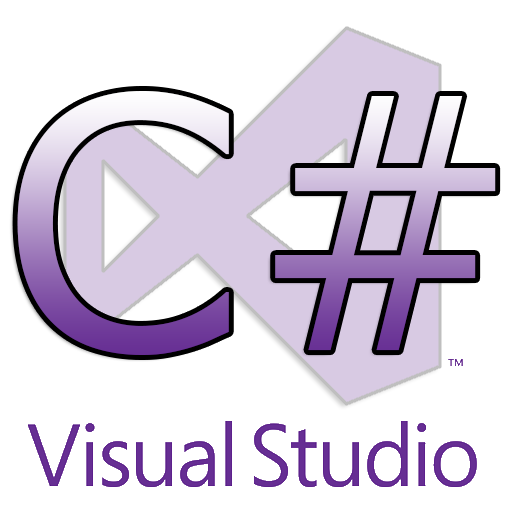

En este nivel aprenderás los conocimientos básicos base para el manejo adecuado en el lenguaje C#, recuerda el aprendizaje es secuencial, esta primera etapa permitira aprender los temas más adecuado e importantes para avanzar al nivel “Intermedio”. Te deseamos el mejor de los éxitos en tu aprendizaje.
 La forma más sencilla de comenzar con C # es usar un IDE. Se utiliza un IDE (entorno de desarrollo integrado) para editar y compilar código. En nuestro tutorial, usaremos Visual Studio Community, que se puede descargar gratis desde https://visualstudio.microsoft.com/vs/community/ . Las aplicaciones escritas en C # usan .NET Framework, por lo que tiene sentido usar Visual Studio, ya que el programa, el marco y el lenguaje son todos creados por Microsoft.
Tutorial de Instalación